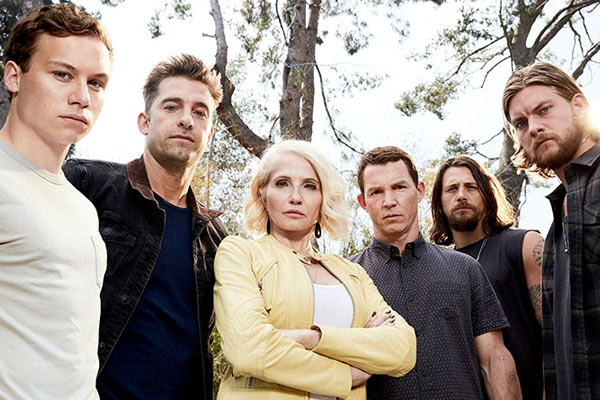

<section class="article-amazon-videos py-5">
  <div class="container">
    <div class="row justify-content-center">
      <article class="col-sm-8">
        <h2>Animal Kingdom</h2>
        <h5>Quand le crime est une affaire de famille</h5>

          <p>
            « Animal kingdom » est une série diffusée sur Amazon Prime Vidéo et sortie en France depuis le 8 février 2018.
          </p>

          <div class="article_img">
            
          </div>

          <p>
            <strong class="emphase">De quoi ça parle: </strong> Joshua n’a que 17 ans lorsque sa mère décède brusquement d’une overdose. Il fait donc appel à sa grand-mère qui le recueille sans attendre au sein de sa famille, une famille où la criminalité et la violence sont des règles fondamentales.
          </p>

          <p>
            <strong class="emphase">Mon avis :</strong> Au-delà du thème principal qui est le banditisme, on y traite de façon légère les maux de la vie tels que l’homosexualité, le décès d’un parent, l’abandon… La série monte crescendo avec une ambiance soignée qui mélange action et émotion. Les personnages sont tous aussi attachants les uns que les autres ce qui nous poussent à se prendre d’affection pour cette famille pas comme les autres. Les intrigues apparaissent de façon surprenante mais sont toujours traitées en profondeur. Le casting est superbe et les acteurs font preuve d’une excellente prestation. Ainsi on retrouve Finn Cole (Peaky Blinders), Shawn Hatosy (Public ennemies), Ben Robson (Vikings) et Jake Weary (Pretty little liars), et tant d’autres.
          </p>

          <p>
            Cette série est pour moi une vraie bonne surprise.
          </p>

          <p>
            <strong class="emphase">Anecdote :</strong> La série est basée sur le film australien du même nom de David Michôd.
          </p>

          <iframe width="560" height="315" src="https://www.youtube.com/embed/Xeh6zQNQNMU" frameborder="0" allow="accelerometer; autoplay; clipboard-write; encrypted-media; gyroscope; picture-in-picture" allowfullscreen></iframe>

        <p class="signature text-end"><strong>Angèle</strong></p>
      </article>
    </div>
  </div>
</section>


